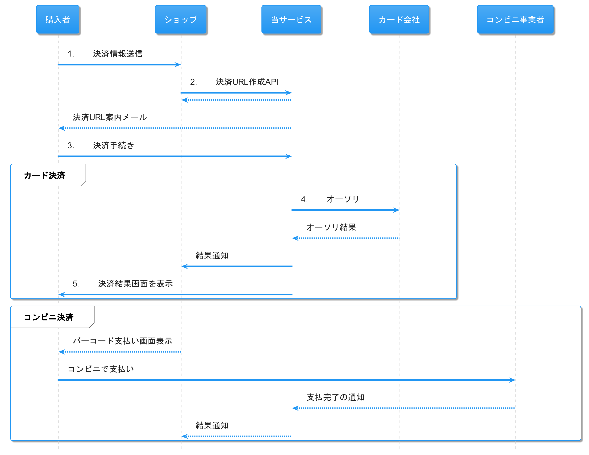
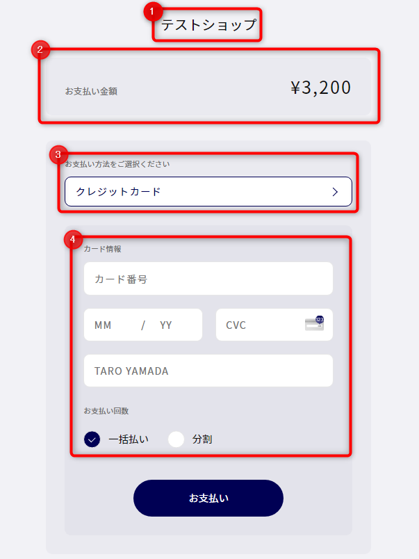
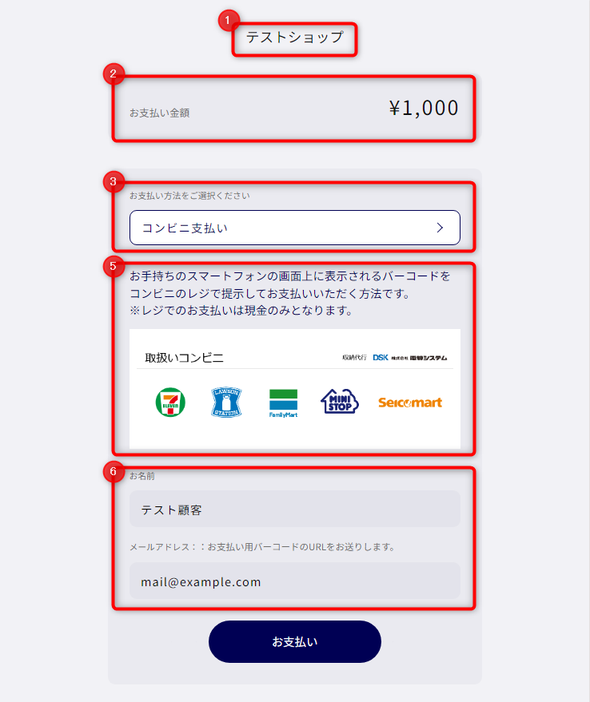
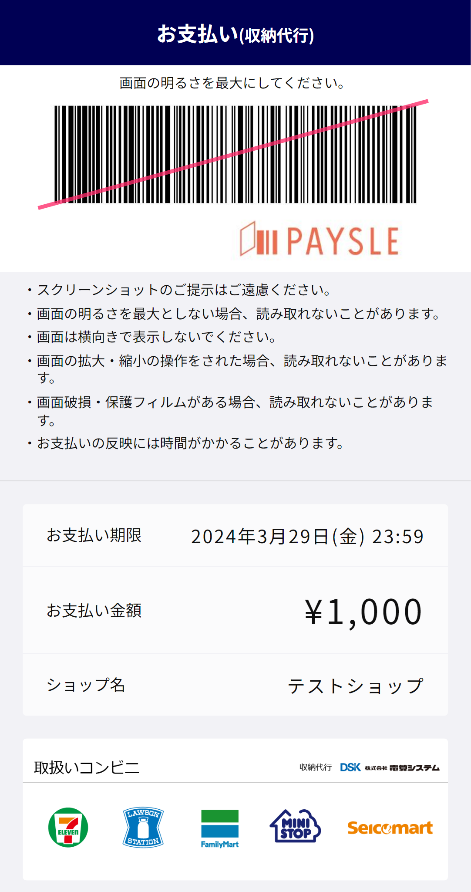
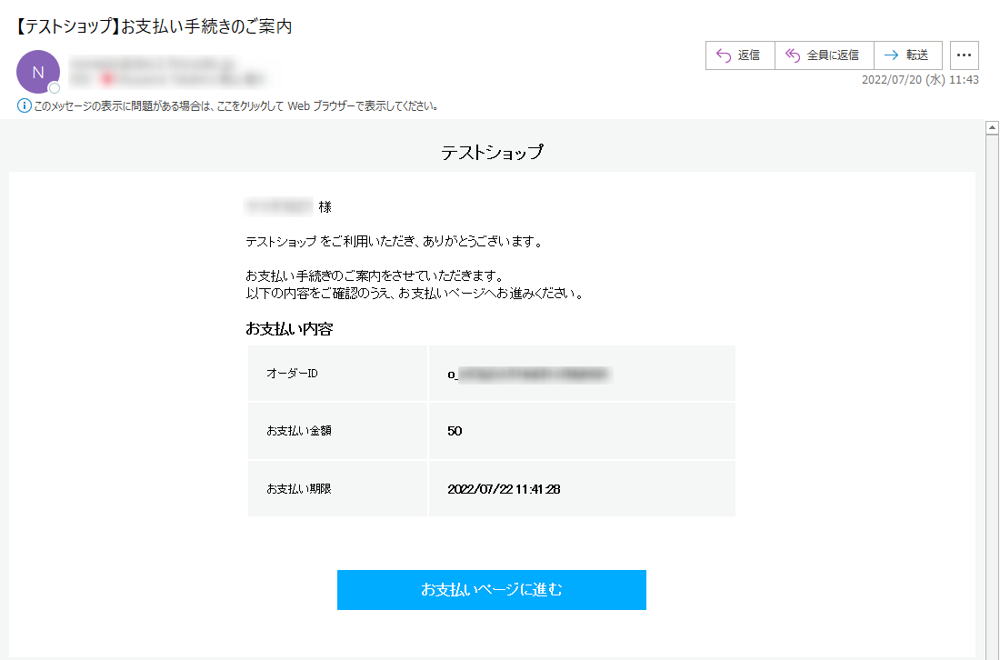
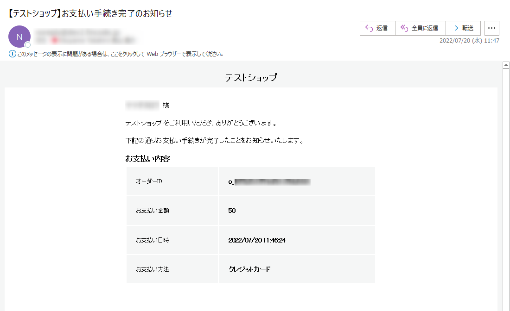
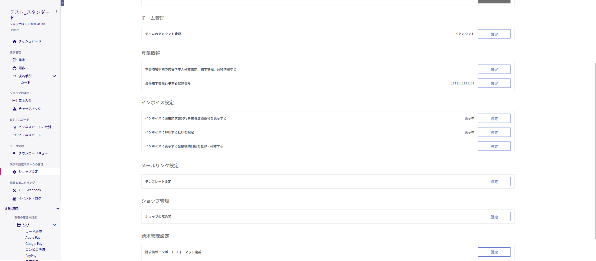
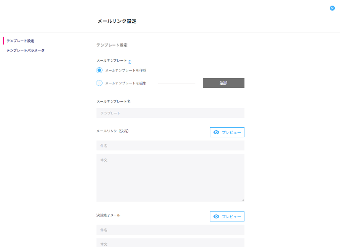
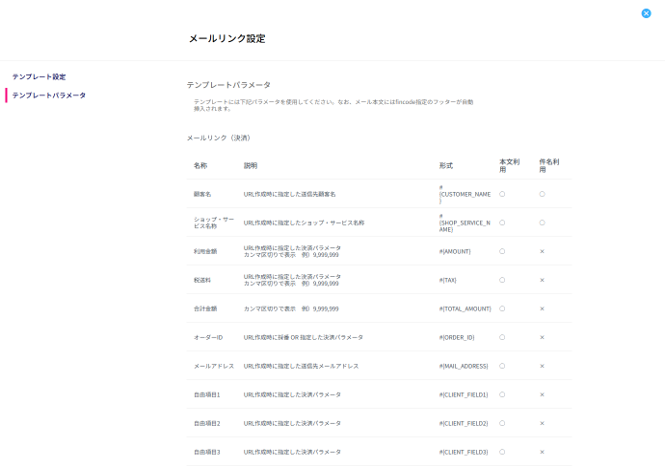
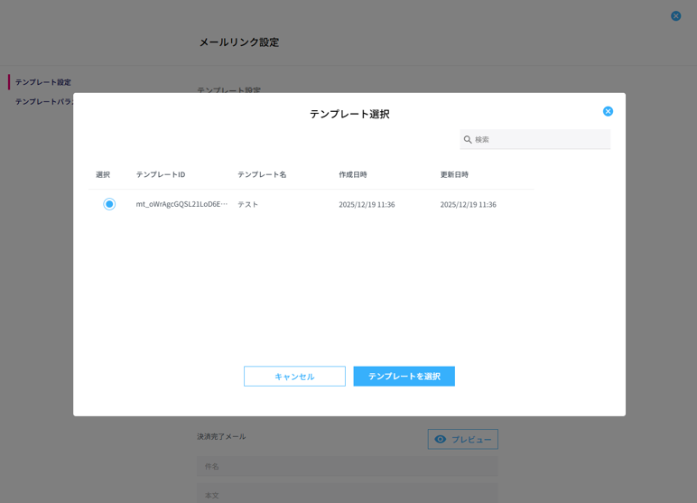

跳转式支付
什么是跳转式支付
跳转式支付让买家使用 fincode 提供的支付页面完成付款。
商户无需自行搭建支付页面，只要引导买家访问 fincode 的支付 URL 即可完成支付。
也可使用“邮件链接”功能，通过电子邮件将支付 URL 告知买家。
可用支付方式
各支付方式对跳转式支付的支持情况如下。
使用卡片以外的支付方式时，请分别申请开通对应支付方式并通过审核。
| 支付方式 | 支持情况 | 补充 |
|---|---|---|
| 卡片支付 | 支持 | |
| Apple Pay | － | |
| Google Pay | － | |
| 便利店支付 | 支持 | |
| PayPay | 支持 | 不支持邮件链接 |
| 银行账户自动扣款 | － | |
| 银行转账（虚拟账户） | 支持 |
执行跳转式支付
使用创建支付 URL接口创建支付 URL，再将买家引导至 fincode 支付页面。
创建支付 URL的详细参数请点击此处查看。
创建跳转式支付 URL
- 买家确定购买的商品和金额。
- 商户调用创建支付 URL接口，并将买家跳转至
決済URL(link_url)。 - 买家选择支付方式并办理付款手续。
- fincode 向相应支付服务商发起支付请求。
- fincode 向买家显示支付结果页面。如果创建支付 URL 时指定了成功 URL，fincode 会通过 POST 重定向到该 URL。
创建跳转式支付 URL（邮件链接）

-
买家确定购买的商品和金额。
-
商户调用创建支付 URL接口。fincode 将
決済URL案内メール发送至宛先メールアドレス(receiver_mail)。※在控制面板签发支付 URL（邮件链接）时，可指定的有效期须短于 60 天且长于 5 分钟，不能恰好为 60 天或 5 分钟。
-
买家办理付款手续。
-
fincode 向相应支付服务商发起支付请求。
-
fincode 向买家显示支付结果页面。如果创建邮件链接时指定了成功 URL，fincode 会通过 POST 重定向到该 URL。
跳转式页面示例
卡片支付示例

便利店支付示例

页面项目
跳转式支付页面上的项目如下。
| No | 项目 | 说明 |
|---|---|---|
| 1 | 商户或服务名称 | 省略时自动显示“账单显示名称”。如果要在跳转式支付中使用其他名称，请指定所需名称。 ※买家的卡片对账单上会显示“账单显示名称”。 |
| 2 | 金额显示区 | 利用金額, 税送料, 合計金額显示此值。 |
| 3 | 支付方式选择框 | 买家可在此下拉框中选择支付方式。 支付方式选项会根据商户开通各支付方式的情况动态变化。 |
| 4 | 各支付方式专用信息输入区 | 收集所选支付方式需要的信息的表单。 例如选择卡片支付时，会自动显示卡号、有效期等输入项目。 |
| 5 | 可用便利店列表 | 显示买家使用便利店支付时可前往的便利店。 |
| 6 | 条码接收方信息 | 便利店支付条码页面的链接会发送至此处显示的邮箱。 买家在便利店柜台出示邮件所附的条码页面即可完成支付。 |
买家的条码页面
买家在跳转式支付中选择便利店支付时，会收到用于便利店支付的条码页面 URL。

邮件模板
使用邮件链接功能时，向买家发送的各种邮件（支付 URL 通知、卡片登记 URL 通知、支付完成邮件）均可选择“fincode 默认模板”或“商户自定义模板”。
※跳转式支付即使未使用邮件链接功能，也能发送支付完成邮件。
测试环境和生产环境的发件地址不同。
| 环境 | 发件邮箱地址 |
|---|---|
| 测试环境 | noreply@test.fincode.jp |
| 生产环境 | noreply@fincode.jp |
fincode 默认模板（邮件示例）


创建商户自定义模板
可以在 fincode 控制面板创建商户自定义模板。
在模板中使用 fincode 指定的参数，可以将交易信息自动插入邮件正文。
-
登录 fincode 控制面板后，从左侧菜单进入“商户设置”，点击“模板设置”中的设置按钮。

-
在“模板设置”中输入所需的邮件模板名称、邮件主题和正文，再点击“设置”。

可在“模板参数”中查看能用于模板的参数。

系统会为每个已设置的模板分配“模板 ID”，创建支付 URL 或卡片登记 URL 时即可选择。
